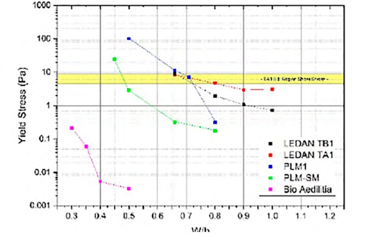
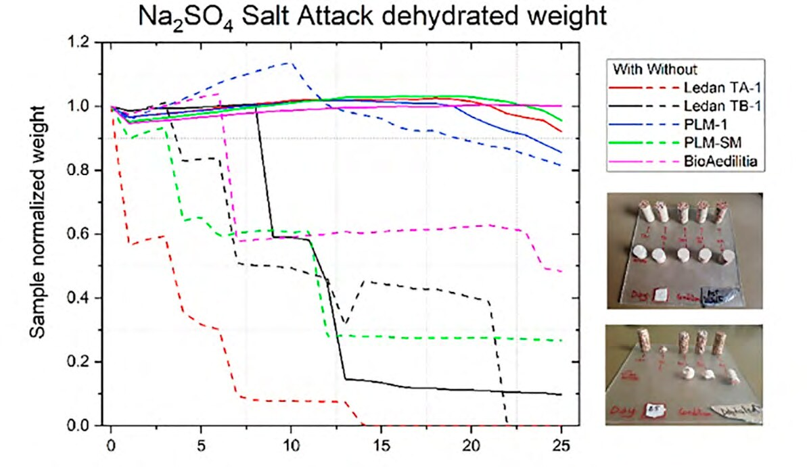

RILEM Proceedings PRO 136 · 2024
Novel Techniques for the Assessment of Injectability & Environmental Resistance of Injection Grouts for Mosaic Conservation
When a mosaic comes away from its bed, there is an alternative to detaching it: inject a fluid mortar into the gap behind it. Conservators often choose that mortar without much data to go on, so we put five commercial grouts to the test.
Drawn live: a sketch of a polished column section, built with the proportions we measured. 56.4 % crushed brick, 32.4 % grout, 11.2 % air, shown in blue as our lapis lazuli pigment showed it.
A rescue from behind
Injection grouting introduces a fluid suspension behind a wall painting, plaster or mosaic, to fill cracks and voids and re-establish adhesion with the substrate. First reported in the 1980s, it has become an established alternative to detaching the work. The layers involved range from a few millimetres in renders and plasters to one or two centimetres in mosaics.
The grout has to do a lot at once: flow through a narrow network, stay stable without separating, be compatible with the original materials, and resist sulphates. Yet there are no standardised methods for testing injectability and salt resistance in this class of materials, and technical data on ready-mix products are often scarce. That can leave decisions to marketing, cost and local availability.
The test bench
- Five grouts
Ledan TB1, Ledan TA1, PLM-1, PLM-SM and Bio Aedilitia, a specially formulated natural hydraulic lime (NHL) grout
- The column
An adaptation of the sand column test of EN 1771: a transparent tube, 22 mm wide and 390 mm long, packed with crushed brick of 2–4 mm
- The push
Injected from the bottom at a constant 10 psi (about 0.75 bar), all prepared first at the same water-to-solid ratio (w/s) of 0.8
- The flow
Rotational rheometry at different w/s, plus grain size by laser diffraction
- The solid
XRPD with Rietveld refinement and FTIR on the powders; compression and splitting tests after 28 days; image analysis of polished sections
- The salt
25 daily cycles in 6 wt% Na₂SO₄ solution, dried at 105 °C, with and without crushed brick
Five columns, one pressure
Same bricks, same pressure, same water ratio. Here is the test again, ten times faster than real time, with the heights of Fig. 3 of the paper. The classes used: Easy if the column fills and at least 1 mL/min keeps flowing out, Feasible if it fills without reaching that overflow, Difficult if it stops or rises too slowly.
Bio Aedilitia
w/s 0.8
Efull in ~17 s
Ledan TA1
w/s 0.8
Efull in ~31 s
Ledan TB1
w/s 0.8
Efull in ~104 s
PLM-SM
w/s 0.8
D250 mm in 120 s
PLM-1
w/s 0.8
D150 mm in 120 s
Heights and times are read from the published plot, so they are approximate; the top of each tube marks 360 mm, the height used for full columns in the plot. Tube texture is illustrative. Bio Aedilitia wins here at w/s 0.8, but at this ratio its viscosity is extremely low and it sediments fast, so its speed is not the whole story.
"Just change the water"
The obvious fix is to adjust the water-to-solid ratio until each grout matches the flow of the best one. We took Ledan TA1 as the reference, because it came out of the column behaving as it went in, and worked out from rheology the ratio that should bring each of the others to the same yield stress.
In the rheometer it looked promising. In the column it did not.
How far grouts got at their rheologically optimised w/s, out of a 36 cm column
Bio Aedilitia formed a plug in the connection tube and never reached the bricks. Crushed brick absorbs 28.4 % of its weight in water, so a lower w/s also meets a thirsty column, though overall pre-wetting did not significantly change the injection performance.
Yield stress against water-to-solid ratio

See the values as a table
| Grout | w/s → yield stress (Pa, approximate) |
|---|---|
| Ledan TA1 | 0.66 → 8.5 · 0.8 → 4.7 · 0.9 → 2.9 · 1.0 → 3.1 |
| Ledan TB1 | 0.66 → 9.1 · 0.8 → 1.9 · 0.9 → 1.1 · 1.0 → 0.72 |
| PLM-1 | 0.5 → 100 · 0.66 → 11 · 0.71 → 7.1 · 0.8 → 0.32 |
| PLM-SM | 0.45 → 24 · 0.5 → 2.9 · 0.66 → 0.32 · 0.8 → 0.18 |
| Bio Aedilitia | 0.3 → 0.21 · 0.35 → 0.059 · 0.4 → 0.0054 · 0.5 → 0.0033 |
The yellow band
It marks the reference, Ledan TA1 at w/s 0.8. Lower the water and most lines climb into it, at their own ratio: that is the "optimum". Bio Aedilitia stays far below, even at w/s 0.3.
But the band describes low-shear behaviour, and in the column we estimated shear rates of about 14 to 320 s⁻¹. Changing w/s improves stability against sedimentation, yet viscosity can't be controlled at low shear (for stability) and high shear (for injection) with water alone.
No grout wins everything
Rietveld refinement sorted out what is actually in the bags. Filler can be calcite or quartz, and it is slightly more than half of every grout except Ledan TB1, at about 75 wt%. The binder is mostly Portland cement, except in PLM-1 and Bio Aedilitia, where it is based on NHL. The C₃S/C₂S ratio separates the two.
Binder drives the hardened behaviour: the cement-based grouts with high C₃S/C₂S gave the highest strength in our tests and low salt resistance. Grain size has more to say about the flow.
| Grout | Binder | Filler | Column at w/s 0.8 | Strength | Sulphates |
|---|---|---|---|---|---|
| Ledan TA1 | Cement | Calcite | Easy, stable before and after | Among the two highest | Low. Without brick it lost large portions in the first days |
| Ledan TB1 | Cement | Calcite, ~75 wt% | Easy, more fluid before than after | Lower | Fractured on day 8 with brick; failed without |
| PLM-SM | Cement | Quartz | Difficult | Among the two highest | Low |
| PLM-1 | NHL | Quartz | Difficult | Low | Moderate |
| Bio Aedilitia | NHL | Calcite | Easy, but sediments fast | Lower | The best: a compact core to the end |

Twenty-five days of salt
Solid lines are grouts inside crushed brick, dashed lines are grout alone. Inside brick, most lines stay near 1 for about 17 days, then corrosion starts on the outside of the cylinders. Only Bio Aedilitia escapes that.
Grout alone is much more dramatic: look at the red dashed line of Ledan TA1, which falls within days, even though it is one of the strongest.
What to look for in a grout
Cohesion for the flow
The key to good injectability lies in cohesivity, controlled by choosing the right particle size distribution, or by adding rheology modifiers. The finer Ledan products have a higher water demand and yield stress, and are more stable against sedimentation.
Lime for the salt
Sulphate resistance comes from the choice of binder, with NHL performing better than cement.
Test the column, too
Rheometry is useful but not enough. Adapted from EN 1771, the column test shows how a grout behaves in a real capillary network, dry or pre-wetted, which is why it can guide better formulations.
The paper
Santoro De Vico, F., Dalconi, M.C., Garbin, E., Artioli, G., Bellotto, M. (2024) Novel Techniques for the Assessment of Injectability & Environmental Resistance of Injection Grouts for Mosaic Conservation. In: Papayianni, I., Válek, J. (eds.) Proceedings of the Workshop "Lime Based Materials for Repairing Historic Structures", RILEM Proceedings PRO 136, pp. 226–241.
Download the paper (PDF, 8.6 MB) The proceedings on RILEM
Published by RILEM Publications. ISBN 978-2-35158-240-4, e-ISBN 978-2-35158-237-4. The workshop was held in Thessaloniki in February 2022. Back to Publications